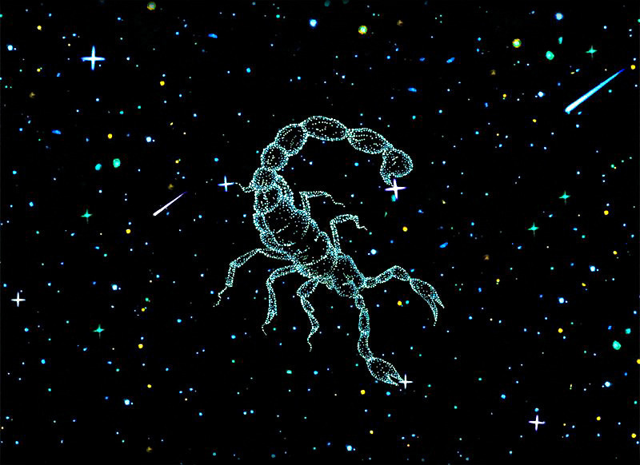

天蝎座的传说
天蝎神话之一 太阳神阿波罗的儿子--巴野顿，天生美丽而性感，他自己也因此感到自负，态度总是傲慢而无礼，太过好强的个性常使他无意间得罪了不少人。有一天，有个人告诉巴野顿说：“你并非太阳神的儿子！”说完大笑扬长而去，好强的巴野顿怎能吞得下这口气，于是便问自己的母亲：“我到底是不是阿波罗的儿子呢？”但是不管母亲如何再三保证他的确就是阿波罗所生，巴野顿仍然不相信他的母亲，于是说：“取笑你的人是宙斯的儿子，地位很高，如果仍然不相信，那幺去问太阳神阿波罗自己吧！”阿波罗听了自己儿子的疑问，笑着说：“别听他们胡说，你当然是我的儿子！” 巴野顿仍执意不信，其实他当然知道太阳神从不说谎，可是他却另有目的--要求驾驶父亲的太阳车，以证明自己就是阿波罗的儿子。“这怎么行？”阿波罗大惊，太阳是万物生息的主宰，一不小心就会酿巨祸，但拗不过巴野顿，阿波罗正说明着如何在一定轨道驾驶太阳车时，巴野顿心高气傲，听都没听立刻跳上了车，疾驰而去。结果当然很惨，地上的人们、动物、植物不是热死就是冻死，也乱了时间，弄得天错地暗，怨声载道。众神们为了遏止巴野顿，由天后赫拉放出一支毒蝎，咬住了巴野顿的脚踝，而宙斯则用可怕的雷霆闪电击中了巴野顿，只见他惨叫一声堕落到地面，死了。人间又恢复了宁静，为了纪念那支也被闪电击毙的毒蝎，这个星座就被命名为“天蝎座”。< 1 2 3 >

最大特征：渴望
金属：铁
掌管身体：性器官、鼻
幸运数字：2、1、6
幸运色：紫色、黑色
幸运石：黑水晶
幸运日：星期二
幸运场所：研究室、湖畔、寺庙
幸运方位：西南偏西向、东南偏南向
理想的旅居国：美国、韩国、挪威、北非、巴拉圭、阿根廷
居住条件：住宅的灯应布置得亮堂又便利，少设窗户，避免直射光线的照射。从位置上看应位于湖畔或江边附近，静谧整洁，格调雅致，最好远 离繁华街道。门窗应朝西南偏西向，住宅内墙采用白色和深红色的混合色。如果再拥有绿树成荫的庭院，则可称上上之选。